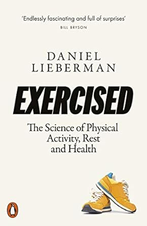
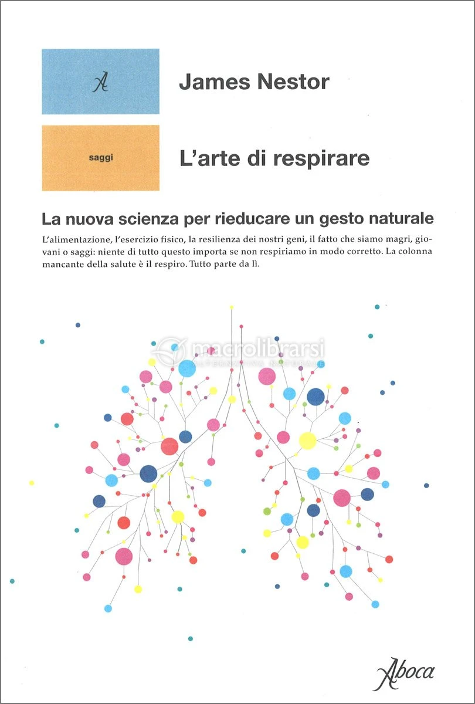

3.2 — Alimentazione e Sport
3.2.1 — VO₂max e longevità
→ Apri come pagina indipendente — bibliografia + nav dedicata
Se non ti muovi, muori. Non è un'esagerazione: 150 minuti di attività fisica moderata a settimana — una camminata veloce di 20 minuti al giorno — riducono la mortalità per tutte le cause del 30%. Chi è completamente sedentario ha un rischio di morte prematura del 50% superiore a chi si muove regolarmente — un dato confermato da Daniel Lieberman in Exercised[1], dove spiega come la specie umana si sia evoluta per essere costantemente attiva, non per “fare esercizio” nel senso moderno. Il sistema MET (Metabolic Equivalent of Task) misura il costo energetico di ogni attività: camminare è 3,5 MET, correre 8, stare seduti 1
(🏃 ff.86.1
Se non ti muovi, muori).
Il dato più potente, però, viene dal VO₂max — la quantità massima di ossigeno che il corpo può utilizzare sotto sforzo. Peter Attia, in Outlive, lo chiama “il miglior predittore singolo di longevità”: chi ha un VO₂max nel quartile più basso ha un rischio di morte 5 volte superiore a chi è nel quartile più alto — più del fumo, del diabete, delle malattie cardiovascolari
(💨 ff.86.2
Misurare l'ossigeno bruciato).
Aggiungiamo un tassello al catalogo omega-3: 2.5 grammi di EPA+DHA al giorno per 8 settimane riducono la perdita di forza post-esercizio tramite oxylipins bioattivi[36]. Gli omega-3 erano già consolidati su cuore e cervello; lo studio estende il beneficio al recupero muscolare — un dominio dove solitamente si sovra-integra con creatina, BCAA, proteine in polvere. Il supplemento più banale risulta anche il più sottovalutato: 2.5 g/die si traducono in quattro capsule da 500mg o una dose singola di olio di pesce. Non è il fitness d'elite che regge la salute aggregata; è la somma di scelte a basso costo, ripetute, che bilanciano infiammazione e riparazione. Il potere degli interventi economicamente accessibili è spesso inversamente proporzionale al loro glamour percepito.
Il mito dei 10.000 passi è appena stato ridimensionato: bastano 4.000 passi al giorno per ridurre del 9-39% il rischio di mortalità per tutte le cause, incluse cardiopatie, cancro e demenza [35]. La soglia efficace è molto più bassa di quanto l'industria del fitness tracker abbia suggerito per anni: i 10.000 passi erano una campagna marketing giapponese degli anni Sessanta, non una scoperta epidemiologica. Il dato cambia il modello: se la curva è concava — massimi guadagni nei primi 4.000 passi, rendimenti decrescenti dopo — fissare traguardi irraggiungibili produce abbandono, non performance. In 😊 ff.138.2 La strada più felice Kathy Willis aveva mostrato come basti un tragitto leggermente più lungo fra il verde per muovere il benessere. Gli interventi migliori sono quelli che la gente può davvero fare.
Ma se i menu raccontano la salute delle città, i piatti che scompaiono raccontano la società che cambia. La pizza — 31 miliardi di dollari nel 2024, un americano su dieci la mangia ogni giorno — è scesa dal 2° al 6° posto[26] tra le cucine USA per vendite. Se nemmeno la pizza resiste alla frammentazione dei gusti, quale monocultura alimentare è al sicuro? Intanto Carbone porta la Red Sauce joint sulla scena mondiale[27] — la cucina italiana-americana non muore, si reinventa come medium visivo e culturale. E dal lato opposto, sostituire manzo con pollo riduce l’impronta di carbonio dell’80%, ma richiede 200 volte più polli[28]: il dilemma tra benessere animale e impatto ambientale non ha risposte facili (🐶 ff.49.2 BMI, BMR). La vera bomba, però, è farmacologica: Hebbia AI stima che la spesa alimentare cali del 6-9% tra chi usa GLP-1[29], con il 60% che ordina meno fast food. Proiettato al 20%+ degli adulti USA entro il 2030, il mercato grocery da 1.600 miliardi potrebbe perdere 88 miliardi. Un farmaco che cambia il carrello della spesa: meno calorie, meno fatturato, e un sistema alimentare costretto a ripensarsi (💊 ff.53.3 Dal COVID al cancro).

“Il VO₂max è il miglior predittore singolo di longevità. Non il colesterolo, non la pressione, non il BMI. L'ossigeno.”
— Peter Attia, Outlive
Strava, la piattaforma sociale per atleti, conta 120 milioni di utenti attivi. Il suo report annuale racconta le abitudini della generazione che corre: la GenZ preferisce il HIIT (High-Intensity Interval Training), i Millennial corrono, i Boomer pedalano. Il dato più interessante è sociale: chi si allena in gruppo è il 22% più costante di chi si allena da solo (📈 ff.86.3 Report Strava 2023). Il contagio sociale dell'esercizio è reale: uno studio pubblicato su Nature Human Behaviour ha dimostrato che se un amico inizia a correre, la probabilità che tu inizi cresce del 25% (🏋 ff.17 Sport e chi ne fa le feci). I dati del 2021 confermano il trend con una granularità ancora maggiore. L’anno pandemico non aveva spento la voglia di muoversi: anzi, le attività caricate su Strava sono cresciute del 38% rispetto al 2020. Chi aveva iniziato a correre nel primo lockdown ha registrato miglioramenti su tutte le distanze nel 2021, segno che l’abitudine sportiva indotta dall’emergenza si è consolidata in pratica duratura. Il dato più sorprendente riguarda le camminate, cresciute di tre volte rispetto all’anno precedente: un fenomeno spinto in parte dai boomer che hanno scoperto il tracciamento digitale anche per la passeggiata al panificio, ma che racconta qualcosa di più profondo. La camminata è l’attività a barriera d’ingresso più bassa che esista: non richiede attrezzatura, non richiede talento, non richiede nemmeno la decisione consapevole di “fare sport”. Eppure il suo impatto sulla longevità e sulla salute mentale è paragonabile a quello della corsa per chi parte da zero. La rivoluzione del movimento non è nei maratoneti o negli ultrarunner: è nel sessantenne che esce di casa con il cane e registra tremila passi senza pensarci (🏃 ff.17.2 Il report del 2021 di Strava).
E il paragone con chi non ha mai smesso di muoversi riporta la scala al suo punto d’origine. Uno studio pubblicato su American Journal of Human Biology ha misurato la fitness aerobica di tribù di cacciatori-raccoglitori[34] come i Hadza della Tanzania, senza allenamento strutturato, senza wearable, senza protocolli HIIT: i dati di VO₂max risultano eccezionalmente alti, superiori a quelli della maggior parte degli occidentali che si allenano regolarmente. Non perché i cacciatori-raccoglitori corrano maratone: perché si muovono tutto il giorno, tutti i giorni, a bassa intensità, interrotti da occasionali picchi di sforzo. È la conferma empirica della tesi di Lieberman in Exercised: la specie umana non è stata selezionata per “fare sport”, ma per essere costantemente attiva. Il paradosso contemporaneo è che 150 minuti a settimana di esercizio strutturato sono diventati una soglia aspirazionale — quando i nostri antenati ne facevano dieci volte tanto senza chiamarlo allenamento. La prescrizione di Attia (VO₂max alto = longevità) e quella di Lieberman (movimento costante = evoluzione) convergono su un punto: la palestra è un surrogato imperfetto di un’esistenza mobile che abbiamo smontato pezzo per pezzo con sedie, auto e ascensori.
Ma la provocazione più netta arriva da Alan Couzens[19], coach esperto di performance: se non riesci a correre una maratona, la tua salute è precaria. Rispondendo a un medico che definisce le maratone “l’attività più inutile dell’umanità”[20], Couzens fa notare: con un VO₂max di 50+, il rischio di morire per ogni causa è 4 volte minore[21]. Per un individuo di 75 kg, VO₂max 50+ significa correre una maratona in 5 ore: 42 km a 7 min/km, 8,5 km/h, circa 2.100 kcal. Il VO₂max misura i “cavalli” dell’organismo: il consumo massimo di ossigeno (ml/min/kg) sotto sforzo. Un modo per misurarlo è il test di Cooper[22] (👨⚕️ ff.57.2 Il consiglio del medico).
Ma se il movimento allunga la vita, quanto la allunga davvero la sconfitta delle grandi malattie? Il tema del cancro è tosto — tutti noi, in modo più o meno diretto, ne siamo toccati. I numeri, però, offrono una speranza concreta: il calo delle morti per tumore iniziato negli anni Novanta è reale, trainato da meno fumo, migliore prevenzione e cure sempre più mirate. Una donna su otto riceve una diagnosi di tumore al seno nel corso della vita; eppure il Trastuzumab Deruxtecan — non è un Pokémon, ma una terapia sviluppata per tumori al seno HER-negativi precedentemente critici — ha dimostrato una sopravvivenza mediana di 23,4 mesi contro i 16,8 del trattamento standard. Nei maschi, le morti per tumore si sono dimezzate dal picco degli anni Novanta. Eppure, secondo Kristen Fortney, fondatrice di BioAge Lab, la cura definitiva del cancro porterebbe a un aumento dell'aspettativa di vita di soli 3-4 anni. Non arriveremmo a cento. La malattia su cui dovremmo davvero focalizzarci? L'invecchiamento stesso — il denominatore comune che rende ogni altra patologia più probabile, più grave, più costosa. Il VO₂max, il microbioma, il sonno profondo non sono mode wellness: sono i veri farmaci anti-invecchiamento, disponibili senza ricetta e senza effetti collaterali (🤞 ff.53.1 Meno morti per il cancro).
E il collegamento tra esercizio e cancro non è solo epidemiologico: è biochimico. Una singola sessione di resistenza o HIIT aumenta le miochine anti-cancro e sopprime la crescita di cellule tumorali in vitro in sopravvissute al cancro al seno. Non serve un protocollo cronico di mesi: basta un workout per rilasciare molecole che il tumore non gradisce. Se l’esercizio è un farmaco oncologico — e questi dati suggeriscono che lo sia, sessione per sessione — la palestra è una farmacia senza ricetta, senza effetti collaterali e senza costi farmaceutici. Il dato si incastra con la provocazione di Couzens: se un VO₂max di 50+ dimezza la mortalità per tutte le cause, e una singola sessione HIIT rilascia miochine anti-tumorali, la domanda non è più se muoversi sia medicina, ma perché i medici non lo prescrivono come tale. Come già visto per la spugna metabolica muscolare, il corpo in movimento non previene solo: combatte attivamente.
E se il VO₂max è il farmaco anti-invecchiamento più potente, una domanda taglia la discussione a metà: conta di più muoversi o mangiare bene? Uno studio pubblicato su Nutrition rivela che chi si muove regolarmente allunga la vita anche mangiando male[4] — e, simmetricamente, chi non si muove trae benefici limitati anche dalla dieta migliore. Il movimento non è un complemento della nutrizione: ne è il prerequisito. La spiegazione passa per la biochimica muscolare: quando i muscoli sono attivati, agiscono da spugna metabolica e assorbono gli eccessi glicemici prima che danneggino le arterie. Non è un invito a mangiare schifezze, ma un riordino delle priorità: se dovete scegliere tra una camminata e un’insalata, scegliete la camminata. La dieta perfetta senza movimento è una Ferrari senza benzina: bellissima, ferma (🥗 ff.120.2 Dieta o esercizio?). A confermarlo arriva un indicatore sorprendentemente semplice: una circonferenza del polpaccio sotto 35 cm predice mortalità più alta negli anziani, mentre sopra 38,5 cm è associata a mortalità ridotta — il polpaccio come oracolo di longevità ([18]).
Chi si muove regolarmente allunga la vita anche mangiando male; chi non si muove trae benefici limitati anche dalla dieta migliore. I muscoli attivati agiscono da spugna metabolica e assorbono gli eccessi glicemici prima che danneggino le arterie. Se dovete scegliere tra una camminata e un’insalata, scegliete la camminata.
3.2.2 — Flow e limiti estremi
→ Apri come pagina indipendente — bibliografia + nav dedicata
C’è un principio di progettazione personale che attraversa tutti questi dati: la continuità batte l'eroismo. Sessioni brevi ma frequenti, routine condivise e feedback semplici (passi, respiro, recupero) creano aderenza nel lungo periodo molto più dei picchi motivazionali. È la stessa logica del training: piccoli carichi sostenibili, ripetuti, che nel tempo diventano trasformazione (🏃 ff.86.1 Se non ti muovi, muori; 🏆 ff.133 Sono un Ironman?). Ma c'è un livello successivo, dove il carico smette di essere sostenibile e diventa estremo — e proprio lì il flow raggiunge la sua forma più pura. Steven Kotler, in The Rise of Superman, documenta come negli sport estremi la possibilità concreta di morire renda il flow non un optional ma una condizione di sopravvivenza: dagli scacchi alle pareti della Patagonia, la posta in gioco calibra la concentrazione (♟️ ff.122.3 Dagli scacchi alla Patagonia). L'effetto Bannister lo conferma su un piano diverso: dopo che Roger Bannister corse il miglio in meno di 4 minuti nel 1954, record che si credeva impossibile, decine di atleti lo replicarono nei mesi successivi. Mitchell Hutchcraft ha portato il principio all'estremo con il Project Limitless — un triathlon da 12.000 km — dimostrando che l'innalzamento dell'asticella risponde ai livelli superiori della piramide di Maslow: quando i bisogni primari sono soddisfatti, la ricerca di stimoli non si spegne, accelera (🔺 ff.122.4 Piramidi in 4 minuti?). La restrizione della metionina migliora la funzione mitocondriale e la longevità[5]. Sinan Aral, professore all’MIT[6], ha studiato Strava come social sportivo: dal 2018 i giri in bici in compagnia sono il 50% più lunghi, le corse il 20% più frequenti con qualcuno. Il dato più bello viene da uno studio che ha usato il meteo come perturbazione casuale[7]: un corridore in Arizona correva meno nei giorni di pioggia a New York, se aveva un amico newyorkese su Strava. Vedere un amico correre 1 km in più ci spinge a fare almeno 750 metri in più. Dieci minuti extra dell’amico = tre minuti extra nostri. Il contagio sportivo è misurabile, asimmetrico, e passa dai social (🕸️ ff.17.3 Social network positivi?).
Ma la corsa non è solo fisiologia o contagio sociale: per molti è diventata una vera e propria religione laica. Costeggiando le 78 statue di personaggi illustri in Prato della Valle a Padova durante una maratona, si ripercorre una tradizione millenaria di pellegrinaggi. Lo sport può essere una risposta ai traumi familiari e diventare una nuova religione[8]: i membri di questa setta parlano in codice — VO2 max, BPM — e si salutano con reverenza mentre corrono, come fossero preti. Jamie Doward, nel Guardian, scrive: “Corriamo perché gran parte della vita è frustrante e futile, e solo contrastandola con qualche sorta di dolore siamo in grado di fare un atto di sfida alle Moire che complottano sulla nostra vita. Correre ci permette, seppur brevemente, di entrare in un altro mondo. La maratona è l’equivalente odierno del pellegrinaggio medievale.” (🔱 ff.57.1 Tra miti greci, filosofia e nuove religioni).
Ma non è solo la mente a spingere i limiti: è anche la tecnologia ai piedi. Le AIR ZOOM ALPHAFLY NEXT% sono praticamente le scarpe usate da Kipchoge a Vienna per abbattere il record delle due ore[23] — e danno una bella mano (circa 5 s/km, ossia 3 minuti e 30 secondi su una maratona). Quanto vale il vento? Siemens ha studiato con simulazioni il record mondiale segnato a Monza[24]: i pacers e la macchina-pacemaker danno un guadagno complessivo di 7,3 W che si traducono in 4’35” in meno sulla maratona — più delle scarpe. E poi c’è chi i limiti li somma: David Kilgore ha vinto il World Marathon Challenge: 7 maratone in 7 giorni su 7 continenti[25]. Quando il corpo umano si trasforma in problema di ingegneria — scarpe, aerodinamica, logistica globale — la domanda non è più se sia possibile, ma chi paga il biglietto (🥳 ff.57.4 Volare, oh-oh).

3.2.3 — Chimica del corpo
→ Apri come pagina indipendente — bibliografia + nav dedicata
Ma il corpo non è solo una macchina da ottimizzare: è anche un sistema chimico straordinariamente complesso. Il lattato, a lungo considerato un rifiuto metabolico, è in realtà un carburante cerebrale: durante l'esercizio intenso, il lattato attraversa la barriera ematoencefalica e alimenta i neuroni, stimolando la produzione di BDNF (Brain-Derived Neurotrophic Factor) — il “fertilizzante del cervello” che promuove la neurogenesi nell'ippocampo (🧠 ff.120.4 Lattato al cervello?). Le arterie, nel frattempo, invecchiano attraverso la reazione di Maillard — lo stesso processo chimico che caramella la crosta del pane. I prodotti finali della glicazione avanzata (AGEs) irrigidiscono le pareti arteriose e contribuiscono all'aterosclerosi. Un'analisi temporale dell'invecchiamento dei tessuti rivela un'inflessione intorno ai 50 anni, con i vasi sanguigni che invecchiano precocemente. Uno 📎 studio Stanford 2026 mappa 13 organi che invecchiano a ritmi diversi: aorta da ~30 anni, sistema immunitario e rene a ~34, cervello a ~41: il corpo non è un orologio unico, ma un’orchestra di clock paralleli. L'esercizio riduce la produzione di AGEs; lo zucchero la accelera. Lo conferma anche la Norvegia maniacale di Blummenfelt: un Ironman in 7 ore e 21 minuti[30] è un capolavoro di chimica muscolare, non solo di volontà Sul versante metabolico-cardiaco il riferimento è ❤️ ff.120.3 Questioni di cuore; sulla cultura nazionale dell’allenamento spinto, invece, vale 🇳🇴 ff.17.1 La Norvegia è maniacale.

Lo zucchero non è intrinsecamente il male: è fondamentale per il nostro cervello (e per Pogačar per vincere al Tour de France). Il vero problema è l’assenza di movimento e di muscoli in grado di “assorbirlo”. In Food Designing[10], Martí Guixé immaginava Sugar Bones: zollette di zucchero con all’interno residui insolubili, fossili dello zuccherino consumo (🍬 ff.145.2 Caramelle e sconosciuti).
Alex Hutchinson, in Endure, dimostra che la fatica è in gran parte un costrutto cerebrale: il cervello “decide” di stancarsi prima che il corpo raggiunga il suo limite reale. Samuele Marcora, ricercatore italiano, ha dimostrato che la fatica mentale riduce la performance atletica anche quando i parametri fisiologici sono identici (🧠 ff.128 La mente ci limita?). L’Ironman — 3,8 km di nuoto, 180 km in bici, 42 km di corsa — è la metafora definitiva: non è una gara contro gli altri, è una negoziazione con sé stessi. Il processo conta più del risultato; la costanza più del talento (🏆 ff.133 Sono un Ironman?).
La fatica mentale riduce la performance atletica anche quando i parametri fisiologici sono identici: il cervello “decide” di stancarsi prima che il corpo raggiunga il suo limite reale. L’Ironman — 3,8 km di nuoto, 180 km in bici, 42 km di corsa — è la metafora definitiva: il processo conta più del risultato, la costanza più del talento.
L'esercizio come prescrizione medica non è più fantascienza: nel Regno Unito, il NHS ha istituzionalizzato il social prescribing[31] — camminate di gruppo, giardinaggio comunitario, lezioni di nuoto — come alternativa ai farmaci per depressione lieve e ansia. Il BMJ conferma[32] che 150 minuti settimanali di attività moderata riducono il rischio di depressione del 25%. E se la mortalità per obesità è in aumento globale, il mercato del well-being da 1.500 miliardi risponde con un paradosso: spendiamo per stare bene quanto non spendiamo per curarci (🩺 ff.57 Il medico mi ha prescritto una maratona; ⚅ ff.49.1 Siamo sempre più tondi). Come celebra Hank Green, la vera vittoria della scienza sono le morti che non sono avvenute[11].
Se l’esercizio è la prima medicina, la genetica potrebbe essere la seconda. Il 2024 è iniziato col botto per l’approvazione FDA della prima terapia genetica basata su CRISPR/Cas9, che combatte l’anemia falciforme — una malattia che colpisce 20 milioni di persone al mondo. Un altro esempio di accelerazione: in meno di dieci anni si è passati da scoprire una tecnologia (Premio Nobel per la Chimica 2020) a usarla per fini terapeutici. La traiettoria ricorda quella dell’AI: dalla curiosità accademica all’applicazione clinica, con una compressione temporale che avrebbe stupito qualsiasi futurista del secolo scorso (🩹 ff.81.4 Terapie geniche).
CRISPR non è l’unica frontiera. Secondo ARK Invest, la terapia genica per malattie cardiovascolari potrebbe superare le statine[37]: queste ultime riducono il rischio infarto del 29%, ma metà dei pazienti le abbandona entro un anno. Una singola iniezione genica al posto di una pastiglia ogni giorno per tutta la vita: il gene editing risolve il problema dell’aderenza terapeutica con un colpo solo. In parallelo, Olezarsen è una terapia RNA mirata che riduce l’espressione di apoC-III, regolatore chiave del metabolismo dei trigliceridi[38]. Spegnere un gene per abbattere i trigliceridi: se l’RNA terapeutico disattiva apoC-III con una singola iniezione, le statine quotidiane sono il passato della cardiologia. Il dogma fondamentale della biologia (📙 ff.66.1 Il dogma fondamentale) — DNA → RNA → proteine — diventa una mappa terapeutica: interveniamo già su tutti e tre i livelli, e ogni livello offre una finestra diversa sulla stessa malattia. Le microplastiche che induriscono le arterie (🩸 ff.130.5 Microplastiche induriscono arterie) aggravano il problema dall’esterno; le terapie geniche lo attaccano dall’interno. La cardiologia del futuro non sarà né farmacologica né chirurgica: sarà informatica, nel senso letterale di riprogrammazione del codice biologico.
La chimica del corpo si intreccia con la fertilità in modi inattesi. Deborah Clegg[12] spiega che le cellule grasse sono sorgenti di estrogeni e regolano l’ovulazione: la loro assenza blocca il ciclo mestruale e la fecondità. Dopo la menopausa, il grasso corporeo diventa di fatto una “terza ovaia”, ribilanciando gli estrogeni venuti a mancare. Soia e germogli contengono sostanze simili agli estrogeni ovarici e possono aiutare a combattere gli effetti della menopausa. Non tutto il grasso è uguale: le cellule grasse bianche[13], flessibili e in grado di rilasciare più facilmente il contenuto, sono le “buone”. Indicatore chiave: il rapporto vita/fianchi identifica l’obesità meglio del BMI. Dal lato opposto, mangiare al McDonald’s e consumare poca frutta diminuiscono la fertilità[14]. E durante la gestazione e l’allattamento, il corpo richiede risorse extra: per allattare servono fino a 400 kcal al giorno in più[15] (🤰 ff.94.1 Come rimanere incinta?).
E se la chimica del corpo decide chi vince le corse, ci sono numeri che decidono chi fa famiglia. Lyman Stone[33], direttore di ricerca di Demographic Intelligence, riporta un dato che illumina la relazione tra denaro e unione: quando le donne vincono alla lotteria, il tasso di matrimonio non cambia; quando vincono gli uomini, si sposano. Il denaro modifica lo status matrimoniale maschile ma non quello femminile — come se il mercato delle relazioni fosse ancora governato da asimmetrie che nessuna rivoluzione culturale ha scalfito. La fisiologia spiega perché corriamo, la demografia spiega con chi finiamo a vivere: due chimica diverse, stesso corpo che le tiene insieme.
3.2.4 — Respiro e sonno
→ Apri come pagina indipendente — bibliografia + nav dedicata
James Nestor, in Breath: The New Science of a Lost Art, rivela che la maggior parte degli esseri umani moderni respira male. La respirazione orale cronica è associata a restringimento delle vie aeree, apnea del sonno, ansia. La respirazione nasale, al contrario, produce ossido nitrico nei seni paranasali — un vasodilatatore che aumenta l'assorbimento di ossigeno del 10-15%. La respirazione lenta, a circa 5,5 respiri al minuto, ottimizza lo scambio gassoso e attiva il sistema parasimpatico (🌀 ff.87.1 Breve storia del respiro). Il sonno, infine, è il grande dimenticato. Il sistema glinfatico — scoperto nel 2012 da Maiken Nedergaard alla University of Rochester — pulisce il cervello dai rifiuti metabolici durante il sonno profondo. Gli organismi viventi vivono per circa 100 milioni di cicli respiratori — una regola che unisce creature dai batteri alle balene. Dormire meno di 6 ore aumenta del 12% il rischio di malattie cardiovascolari. La cronobiologia insegna che anche quando mangiamo conta: topi alimentati nelle stesse calorie ma in finestre temporali diverse pesano il 40% in meno (💤 ff.47 Russa? No problem!) (🌄 ff.22 Dieta circadiana?).

Se la respirazione nasale ottimizza lo scambio gassoso, la respirazione controllata può fare di più: spegnere lo stress. La tecnica del 3-4-5 è disarmante nella sua semplicità: inalare per 3 secondi, trattenere il respiro per 4, espirare per 5. Le evidenze scientifiche confermano che l’espirazione prolungata attiva il nervo vago e riduce il cortisolo. Dodici secondi per ciclo, cinque respiri al minuto: il tempo di leggere questa frase è sufficiente per iniziare. In un’epoca che misura il benessere in abbonamenti e integratori, il rimedio più antico resta il più accessibile — gratis, portatile, e vecchio quanto il primo respiro (💆♀️ ff.87.4 Respirare contro lo stress: il metodo 3-4-5).
Il report “Year in Sport 2023” di Strava[17] conferma il quadro con una granularità che nessun sondaggio tradizionale può raggiungere: corsa, bicicletta e camminate restano le tre attività più praticate al mondo, ma il dato più interessante è generazionale. La Gen Z preferisce attività più corte e veloci, mentre i Boomers preferiscono la bicicletta con il doppio delle attività rispetto alla corsa. Tra i Gen Z i commuters sono raddoppiati nell'ultimo anno: i giovani vanno al lavoro in bici. Le motivazioni? Dieta, obiettivi e gare, e buona musica — rock in testa, anche se l'hip hop insegue (🟠 ff.86.3 Report Strava 2023).